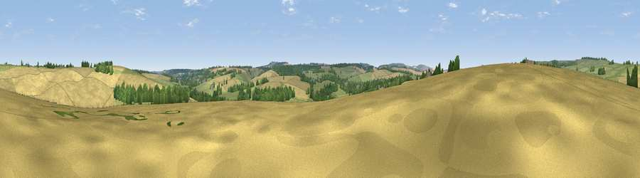

Viewpoint near Fyfield
#42676 in England · top 95% of its area beats it · near FyfieldWhere it is
The exact computed spot (SU 15125 69225). Click the marker for map links.
The view, rendered

A 360° render of this exact spot computed from the terrain model, tree cover and land cover — summer colours, afternoon light, calibrated against photographs of famous viewpoints. Real trees, hedges and buildings will differ in detail.
The panorama
Grey silhouette: terrain skyline in each direction (720 bearings, Earth curvature and refraction included). Dashed green: skyline with trees (+15 m) and buildings (+8 m) as obstacles. Blue strip: how far the ground is visible on each bearing.
Where the view opens
Wedge length = distance to the farthest visible ground on that bearing (vegetation-aware). Rings at 10, 25 and 50 km.
What fills the view
53% cropland · 32% grassland · 14% woodland ·
Angular shares of the visible panorama (visual magnitude), not map area. Landscape diversity 0.44 (0–1 Shannon).
Key numbers
More beautiful places nearby
The staircase of upgrades: each row has a higher view potential than everything closer. Driving times are estimates from straight-line distance, calibrated against real road routing — check an actual route before setting out.
| Place | Direction | Drive | Score |
|---|---|---|---|
| Granham Hill | ESE · 3 km | ~8 min | 30.7 |
| Viewpoint near Marlborough | ESE · 3 km | ~8 min | 31.6 |
| Lurkeley Hill | SW · 4 km | ~9 min | 42.0 |
| Viewpoint near East Kennett | SW · 4 km | ~10 min | 46.5 |
| Viewpoint near Winterbourne Monkton | NW · 5 km | ~11 min | 57.6 |
| Viewpoint near Winterbourne Bassett | NNW · 6 km | ~12 min | 61.5 |
| Hackpen Hill | NNW · 6 km | ~12 min | 61.7 |
| Viewpoint near Alton Priors | SSW · 6 km | ~13 min | 70.3 |
51.42184, -1.78387 · source: screening · position refined by local search. Computed location — check access rights before visiting.